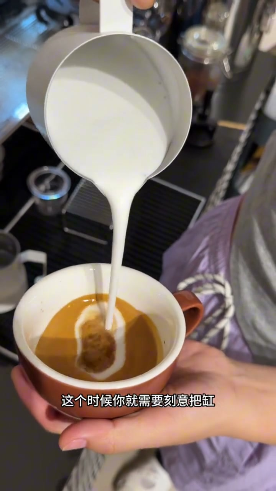
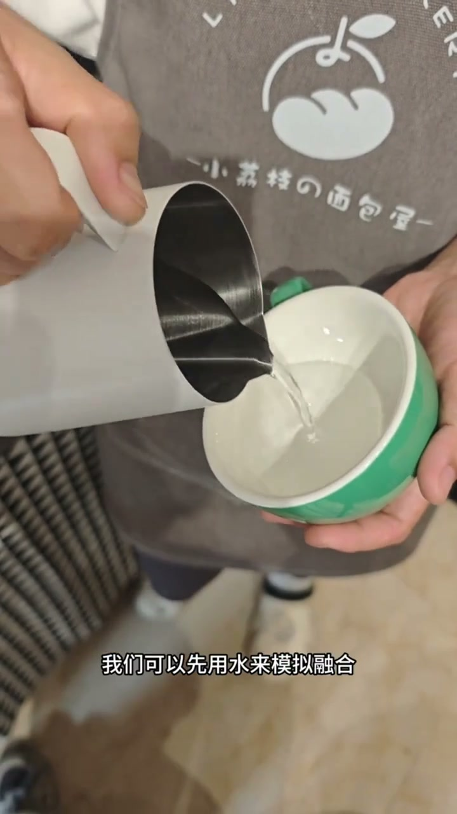
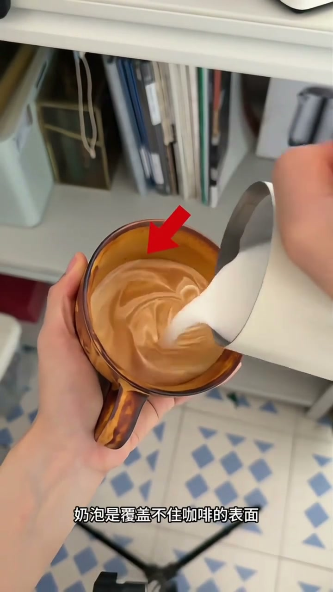
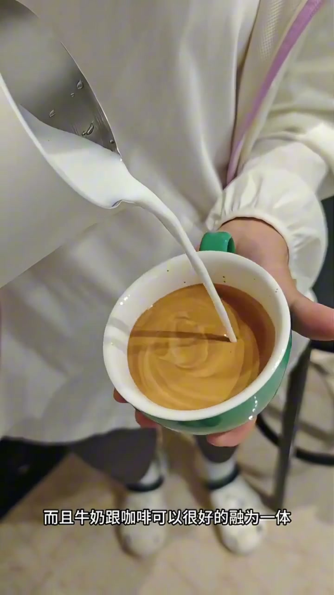
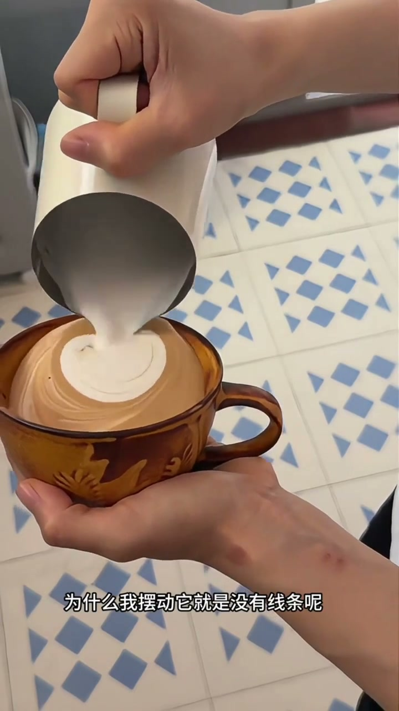
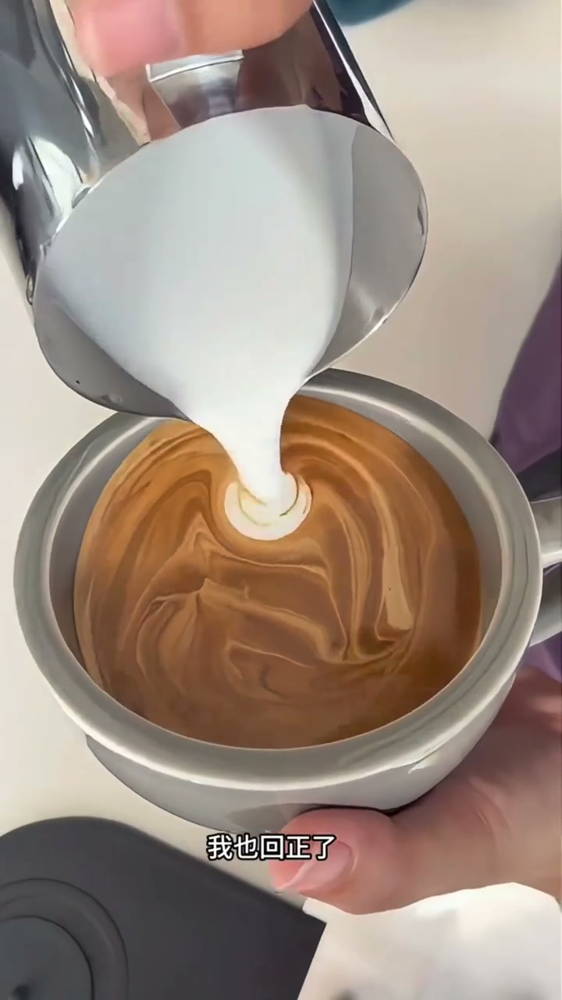

内容要点
咖啡拉花教学中针对线上学员常见错误的集中纠正视频，涵盖奶泡厚度、融合高度、线条成形、回震技巧和流量控制五大核心问题。每个问题都给出了明确的原因诊断和可操作解决方案，适合遇到拉花瓶颈的学员对照自查。
知识结构
奶泡偏厚导致泛白，需将拉花缸抬高以增强冲击力；奶泡打薄时，融合阶段缸嘴过低会导致油脂无法搅匀，咖啡出现先苦后甜的断层口感。
不熟练时先用水替代牛奶练习融合过程，控制水流如拇指大小，缸嘴距液面8-10厘米，掌握后即便不拉花咖啡口感也会提升。
打奶泡时进气量太少导致奶泡如流水状，覆盖不住咖啡表面，拉花时无足够泡沫支撑图案。需调整奶泡厚度，找到适合自己机器的打厚方法。
高处倒奶时会冲散泡沫，需将缸嘴几乎贴到咖啡表面，边倒边摆动。同时必须配合回震咖啡杯，否则摆动的水波会被咖啡吃掉。
回震和摆动都做到位但图案仍然小，是因为流量不够。流量够大奶泡出去够多，线条自然快速成形。不要小心翼翼，大胆加大流量。
拉花五大纠错形成闭环：奶泡厚度决定图案是否变形，融合高度影响口感和叶面洁净度，回震决定线条是否成形，流量控制决定图案大小。学会用大拇指粗细的水流做融合，是口感提升的第一步。
一、奶泡偏厚与融合高度：两个基础问题
[00:00 → 15:28]视频一开场就直击要害：如果奶泡一倒进去就泛白，说明奶泡偏厚了。这时候要刻意把拉花缸抬高，利用高流距带来更强的冲击力。哪个地方叶面不干净，牛奶就往那里倒，通过这种方法让叶面变得更干净。干净的叶面可以带来更均衡顺滑的口感。
但如果融合过程中缸嘴的叶面过低，没有足够的冲击力，油脂就没有办法充分被牛奶搅匀。如果没搅匀，就可能会出现咖啡味道先苦后甜的问题。所以当我们不熟练的情况下，可以先用水来模拟融合这个过程。

二、用水模拟融合：零成本练习法
[15:28 → 26:84]不熟练的情况下，教练建议先用水来模拟融合这个过程。可以控制好水流，控制好转动的速度，尽可能保持融合的过程中水流大概像拇指般大小。融合的过程缸嘴高度在8到10公分。当你这个动作掌握熟练了，就算不拉花，你的咖啡口感一定会比以前好喝很多。

三、图案变形与线条不明显：奶泡厚度的锅
[26:84 → 60:92]为什么你拉花图案变形、线条不明显？主要原因是在打奶泡的过程中进气量太少，导致晃动奶泡时如同水状。薄奶泡可以看到融合的过程，奶泡是覆盖不住咖啡表面的，所以表面没有足够的奶泡去支撑你在拉花时的图案，图案就变形了。这时候要调整奶泡的厚度。不管你是家用机还是商用机，记得找到适合你的方法把奶泡再打厚一点。
所谓适合拉花的奶泡，是在拉花缸中晃动时它会有细腻的流动感，也有挂壁的效果。从融合就能看到液体不会有破洞，而且牛奶跟咖啡可以很好融为一体。只要奶泡不偏薄，拉花图案就不容易变形。

四、线条为什么不明显：倒奶高度才是关键
[60:92 → 117:12]线条不明显的关键原因是：在高处倒奶，奶泡会被往下冲。你只需要把缸嘴几乎贴到咖啡表面，然后边倒边摆动，你会发现线条自然而然浮在上面而且非常清晰。
但如果你的图案会变形或者拉花线条不明显，应该就是出现了我说的这两个问题。然而很多人会说："哎我奶泡明明很好，为什么我摆动它就是没有线条呢？"教练让大家认真看——在摆动的过程中，咖啡杯回震太慢（或者说没有回震）。缸嘴是扎在咖啡表面摆动的，所以你摆出来的波动感都直接被咖啡吃掉了，所以你拉花才会没有线条。解决的办法非常简单：在摆动的过程，别忘了回震咖啡杯。你会发现线条出来就非常轻松且丝滑。

五、图案太小怎么办：流量必须大
[117:12 → 145:68]"我也回震了、我也摆动了，可是为什么我的图案那么小呢？那我怎么改呢？"教练给出直接答案：流量得大一点。只要流量够大，奶泡出去够多，它的线条就很快形成。如果你觉得线条不往前飘，就再大一点；还不往前飘，再大一点。
最后教练叮嘱："记住千万不要小心翼翼，按照我的方法使，我相信你一定会更容易成功。"

